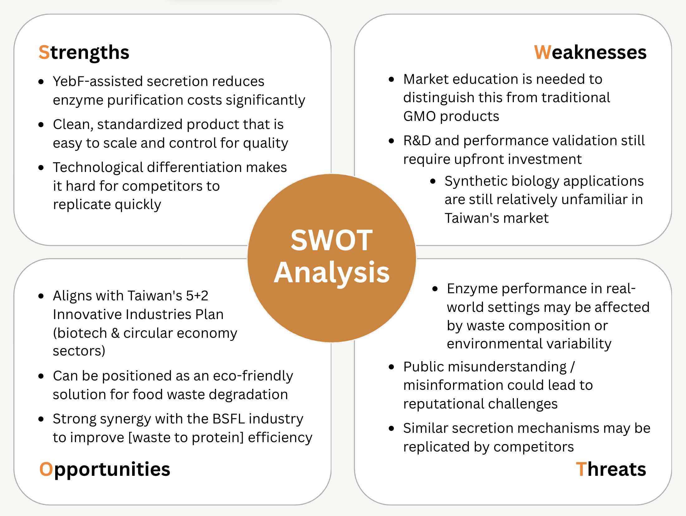
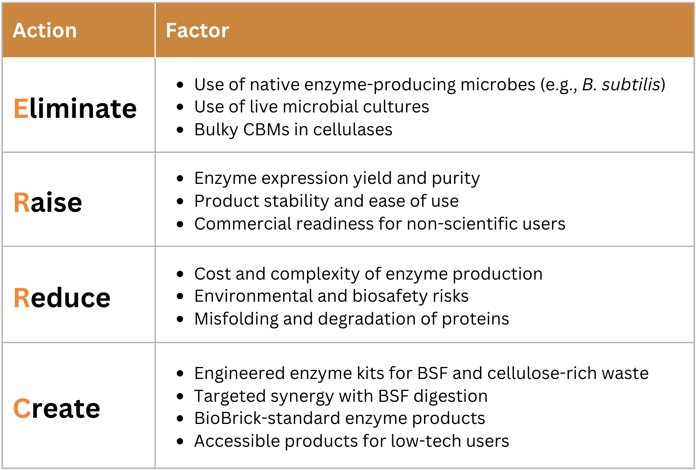

Overview
To gain a deeper understanding of the strengths and challenges of our project, we conducted a
SWOT analysis. This tool allows us to evaluate the internal and external factors that may
influence the success of our product. We aim to be better equipped to strengthen our positioning
within the bio-based waste management sector and address potential risks during development and
commercialization.
SWOT Analysis Diagram
ERRC Grid

Risk Analysis
The development timeline outlined in our business and product development roadmap is ideal, but
it might face unexpected challenges due to technical and operational risks. As with many biotech
startups, problems can form during the transition from lab research to real applications.
The first risk lies in laboratory optimization and yield consistency. While preliminary results
support the effectiveness of the YebF-facilitated secretion system, enzyme output levels may
vary under different growth conditions or expression hosts. A delay in optimizing yield could
stall downstream testing. To mitigate this, we will conduct parallel testing with multiple E.
coli strains and secretion constructs, while setting performance benchmarks for enzyme recovery
and activity early in the development process.
The second risk involves scaling up purification. While YebF improves secretion, maintaining
enzyme quality and activity at pilot and industrial scales is not guaranteed. Enzyme degradation
during recovery or formulation could limit effectiveness. We will conduct early pilot-scale runs
to identify issues in cost, purity, and stability. If needed, we will adjust fermentation
conditions or add post-processing steps.
Third, real-world integration with BSFL systems adds environmental uncertainty. Variations in
food waste composition, temperature, or microbial competition may reduce enzyme performance. To
address this, we will conduct field trials with BSFL farms using different substrates. If
efficacy declines, we will analyze performance data to identify key limiting factors, then
iteratively adjust enzyme concentration, modify application intervals, or develop
region-specific formulations based on local environmental parameters.
Conclusion
The market analysis has highlighted a critical and growing challenge in Taiwan’s circular
economy: the inefficiency in processing cellulose-rich food waste through Black Soldier Fly
Larvae (BSFL) systems. This inefficiency limits protein yield, slows bioconversion, and creates
operational bottlenecks for both public and private waste processors. LarVase offers an
enzyme-based solution to overcome these barriers, which is scientifically robust, economically
viable, and environmentally beneficial.
Our product (purified cellulolytic enzyme produced using a YebF-assisted secretion pathway)
avoids the high purification costs common to enzyme production. This positions us to supply the
BSFL industry with an affordable, scalable additive that enhances larval digestion of fibrous
waste, thereby improving waste reduction rates and feed conversion efficiency. Through strategic
market segmentation, we have identified two primary deployment models: integration with existing
BSFL biowaste infrastructure, or targeted collaborations with municipal food waste contractors
and agri-tech startups. The financial models show that even a modest increase in conversion
efficiency can translate into significant economic and environmental gains. Ultimately, LarVase
has the potential to transform how food waste is managed in Taiwan and beyond, turning organic
refuse into sustainable value while reducing environmental harm.